<DOCUMENT>
<TYPE>EX-99.2
<SEQUENCE>3
<FILENAME>tsm-ex992_8.htm
<DESCRIPTION>EX-99.2
<TEXT>
<html><body><p align="center">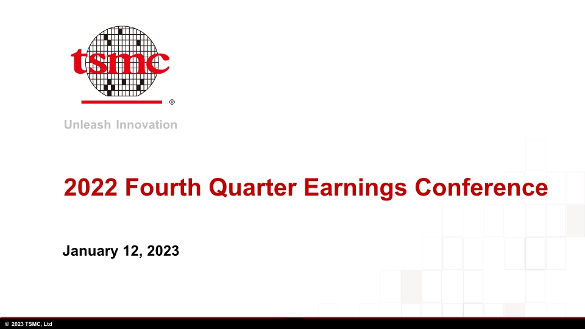</p><p style="margin-top:0pt;margin-bottom:0pt;font-size:1pt;line-height:0pt;color:#FFFFFF;font-family:Times New Roman;">2022 Fourth Quarter Earnings Conference  January 12, 2023 </p><p style="margin-top:9pt; margin-bottom:9pt; border-top:2pt solid gray; page-break-after:always"></p><p align="center">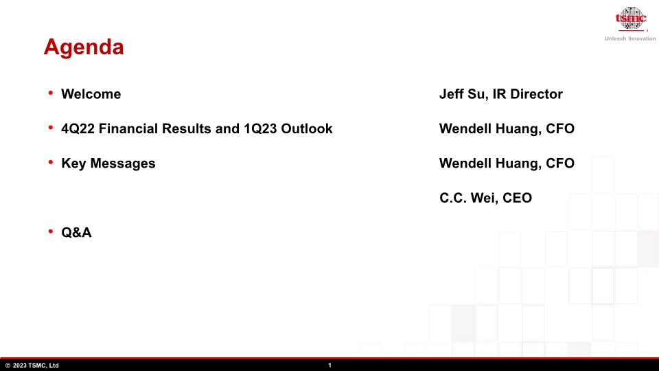</p><p style="margin-top:0pt;margin-bottom:0pt;font-size:1pt;line-height:0pt;color:#FFFFFF;font-family:Times New Roman;">Agenda Welcome					     	             Jeff Su, IR Director
4Q22 Financial Results and 1Q23 Outlook	    	             Wendell Huang, CFO
Key Messages 			                  	             Wendell Huang, CFO                                                    						                          C.C. Wei, CEO
Q&amp;A						 </p><p style="margin-top:9pt; margin-bottom:9pt; border-top:2pt solid gray; page-break-after:always"></p><p align="center">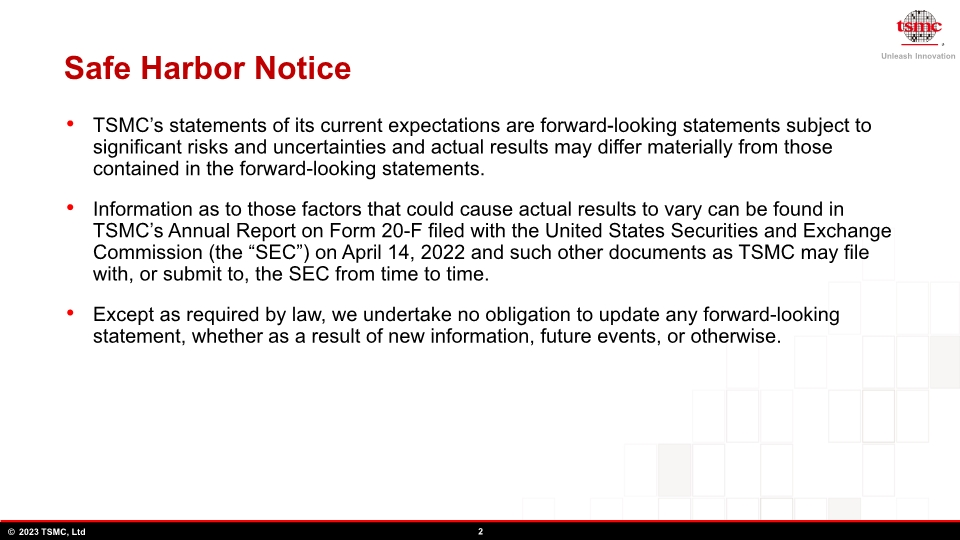</p><p style="margin-top:0pt;margin-bottom:0pt;font-size:1pt;line-height:0pt;color:#FFFFFF;font-family:Times New Roman;">Safe Harbor Notice TSMC&#8217;s statements of its current expectations are forward-looking statements subject to significant risks and uncertainties and actual results may differ materially from those contained in the forward-looking statements.

Information as to those factors that could cause actual results to vary can be found in TSMC&#8217;s Annual Report on Form 20-F filed with the United States Securities and Exchange Commission (the &#8220;SEC&#8221;) on April 14, 2022 and such other documents as TSMC may file with, or submit to, the SEC from time to time.

Except as required by law, we undertake no obligation to update any forward-looking statement, whether as a result of new information, future events, or otherwise. </p><p style="margin-top:9pt; margin-bottom:9pt; border-top:2pt solid gray; page-break-after:always"></p><p align="center">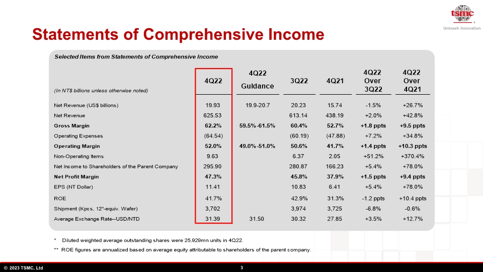</p><p style="margin-top:0pt;margin-bottom:0pt;font-size:1pt;line-height:0pt;color:#FFFFFF;font-family:Times New Roman;">Statements of Comprehensive Income </p><p style="margin-top:9pt; margin-bottom:9pt; border-top:2pt solid gray; page-break-after:always"></p><p align="center">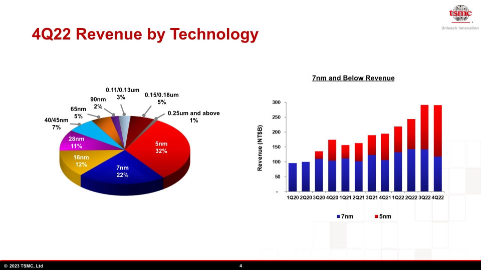</p><p style="margin-top:0pt;margin-bottom:0pt;font-size:1pt;line-height:0pt;color:#FFFFFF;font-family:Times New Roman;">4Q22 Revenue by Technology   0.11/0.13um 3% 90nm 2% 0.25um and above 1% 40/45nm 7% 28nm 11% 7nm and Below Revenue 16nm  12% 0.15/0.18um 5% 65nm   5% 7nm 22% 5nm 32% </p><p style="margin-top:9pt; margin-bottom:9pt; border-top:2pt solid gray; page-break-after:always"></p><p align="center">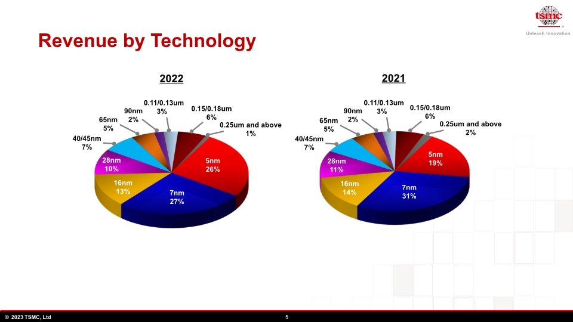</p><p style="margin-top:0pt;margin-bottom:0pt;font-size:1pt;line-height:0pt;color:#FFFFFF;font-family:Times New Roman;">Revenue by Technology 2021 2022   0.11/0.13um 3% 90nm 2% 0.25um and above 1% 28nm 10% 16nm  13% 0.15/0.18um 6% 65nm   5% 7nm 27% 5nm 26% 40/45nm 7%   0.11/0.13um 3% 90nm 2% 0.25um and above 2% 28nm 11% 16nm  14% 0.15/0.18um 6% 65nm   5% 7nm 31% 5nm 19% 40/45nm 7% </p><p style="margin-top:9pt; margin-bottom:9pt; border-top:2pt solid gray; page-break-after:always"></p><p align="center">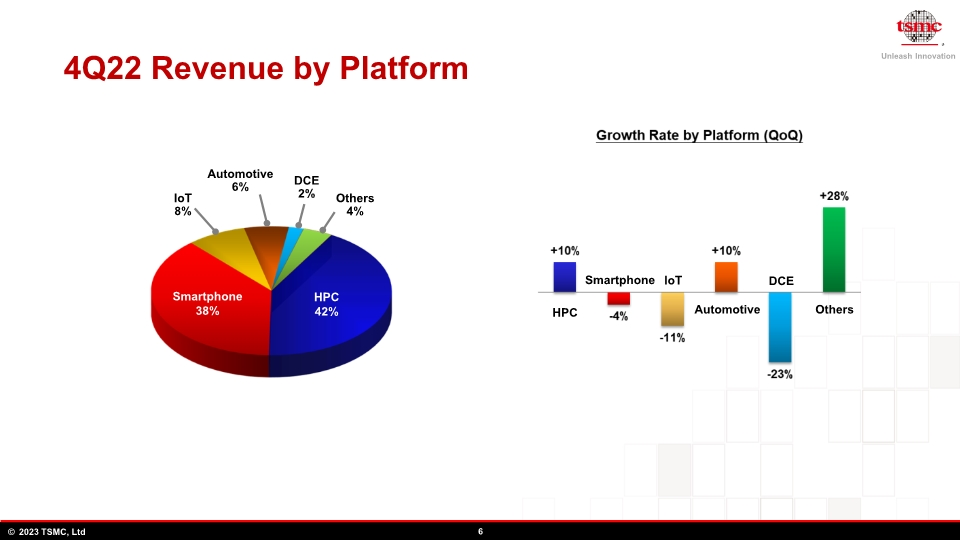</p><p style="margin-top:0pt;margin-bottom:0pt;font-size:1pt;line-height:0pt;color:#FFFFFF;font-family:Times New Roman;">4Q22 Revenue by Platform Smartphone 38% Automotive
6% HPC 42% DCE
2% Others
4% IoT
8% Smartphone Automotive Others HPC IoT DCE </p><p style="margin-top:9pt; margin-bottom:9pt; border-top:2pt solid gray; page-break-after:always"></p><p align="center">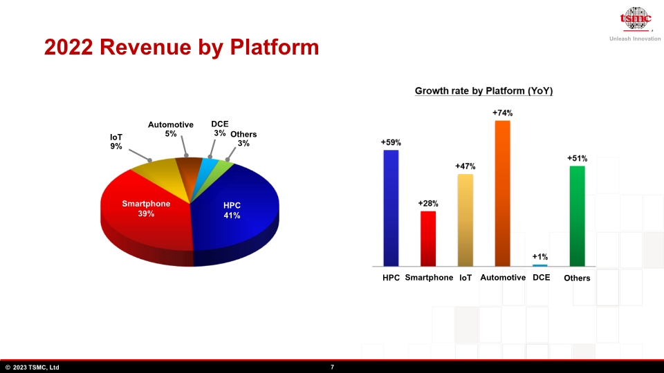</p><p style="margin-top:0pt;margin-bottom:0pt;font-size:1pt;line-height:0pt;color:#FFFFFF;font-family:Times New Roman;">2022 Revenue by Platform Smartphone 39% Automotive
5% HPC 41% DCE
3% Others
3% IoT
9% Smartphone Automotive Others HPC IoT DCE </p><p style="margin-top:9pt; margin-bottom:9pt; border-top:2pt solid gray; page-break-after:always"></p><p align="center">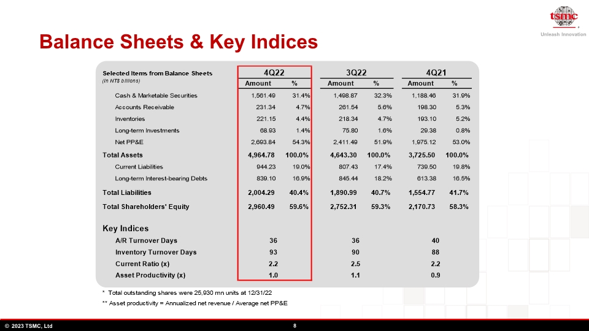</p><p style="margin-top:0pt;margin-bottom:0pt;font-size:1pt;line-height:0pt;color:#FFFFFF;font-family:Times New Roman;">Balance Sheets &amp; Key Indices </p><p style="margin-top:9pt; margin-bottom:9pt; border-top:2pt solid gray; page-break-after:always"></p><p align="center">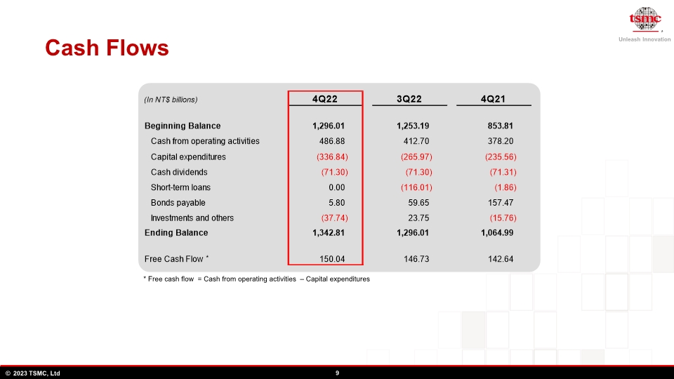</p><p style="margin-top:0pt;margin-bottom:0pt;font-size:1pt;line-height:0pt;color:#FFFFFF;font-family:Times New Roman;">Cash Flows * Free cash flow  = Cash from operating activities  &#8211; Capital expenditures * </p><p style="margin-top:9pt; margin-bottom:9pt; border-top:2pt solid gray; page-break-after:always"></p><p align="center">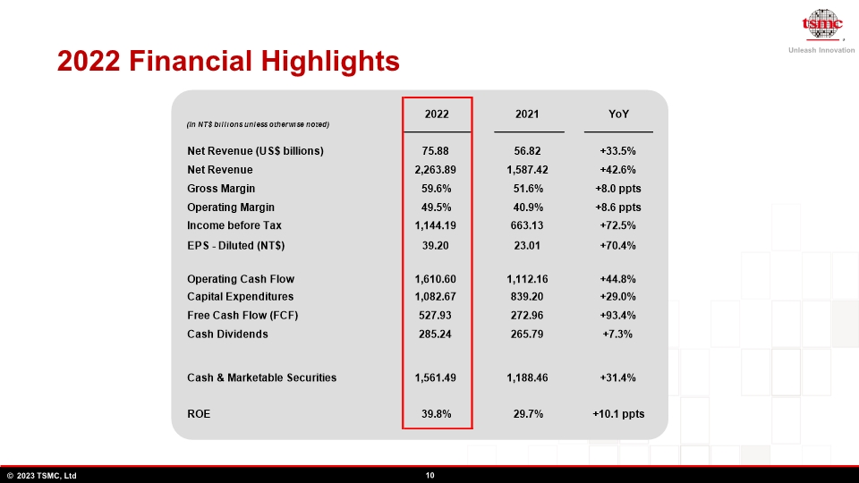</p><p style="margin-top:0pt;margin-bottom:0pt;font-size:1pt;line-height:0pt;color:#FFFFFF;font-family:Times New Roman;">2022 Financial Highlights  </p><p style="margin-top:9pt; margin-bottom:9pt; border-top:2pt solid gray; page-break-after:always"></p><p align="center">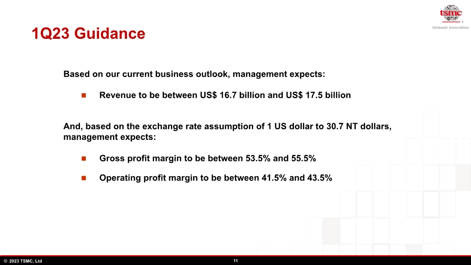</p><p style="margin-top:0pt;margin-bottom:0pt;font-size:1pt;line-height:0pt;color:#FFFFFF;font-family:Times New Roman;">1Q23 Guidance Revenue to be between US$ 16.7 billion and US$ 17.5 billion Based on our current business outlook, management expects: And, based on the exchange rate assumption of 1 US dollar to 30.7 NT dollars, management expects: Gross profit margin to be between 53.5% and 55.5% Operating profit margin to be between 41.5% and 43.5% </p><p style="margin-top:9pt; margin-bottom:9pt; border-top:2pt solid gray; page-break-after:always"></p><p align="center">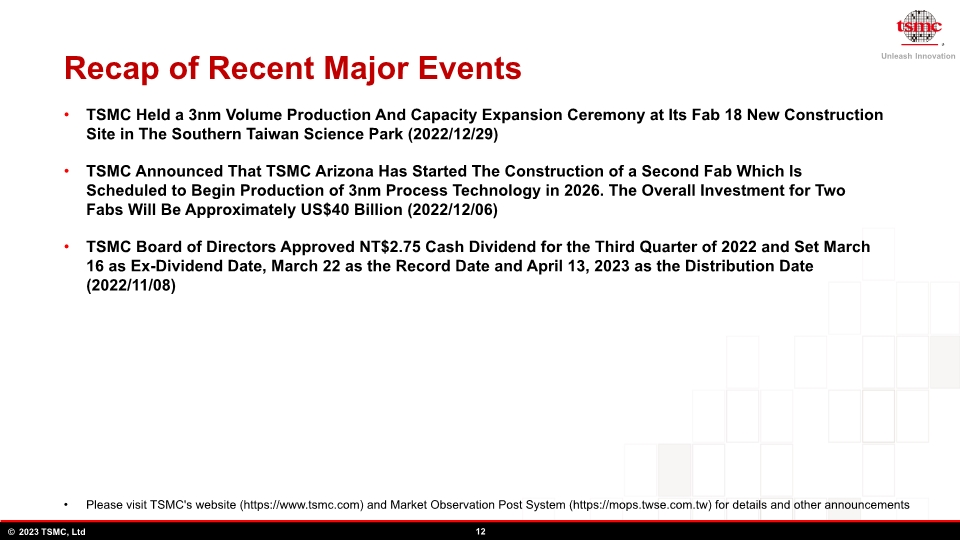</p><p style="margin-top:0pt;margin-bottom:0pt;font-size:1pt;line-height:0pt;color:#FFFFFF;font-family:Times New Roman;">Recap of Recent Major Events Please visit TSMC&apos;s website (https://www.tsmc.com) and Market Observation Post System (https://mops.twse.com.tw) for details and other announcements TSMC Held a 3nm Volume Production And Capacity Expansion Ceremony at Its Fab 18 New Construction Site in The Southern Taiwan Science Park (2022/12/29)
TSMC Announced That TSMC Arizona Has Started The Construction of a Second Fab Which Is Scheduled to Begin Production of 3nm Process Technology in 2026. The Overall Investment for Two Fabs Will Be Approximately US$40 Billion (2022/12/06)
TSMC Board of Directors Approved NT$2.75 Cash Dividend for the Third Quarter of 2022 and Set March 16 as Ex-Dividend Date, March 22 as the Record Date and April 13, 2023 as the Distribution Date (2022/11/08) </p><p style="margin-top:9pt; margin-bottom:9pt; border-top:2pt solid gray; page-break-after:always"></p><p align="center">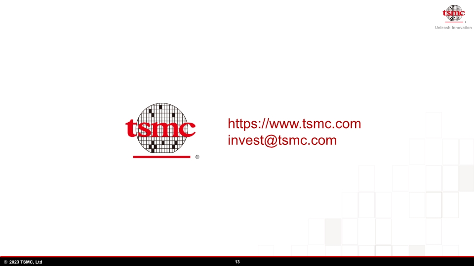</p><p style="margin-top:0pt;margin-bottom:0pt;font-size:1pt;line-height:0pt;color:#FFFFFF;font-family:Times New Roman;">https://www.tsmc.com invest@tsmc.com </p><p style="margin-top:9pt; margin-bottom:9pt; border-top:2pt solid gray; page-break-after:always"></p></body></html>
</TEXT>
</DOCUMENT>
